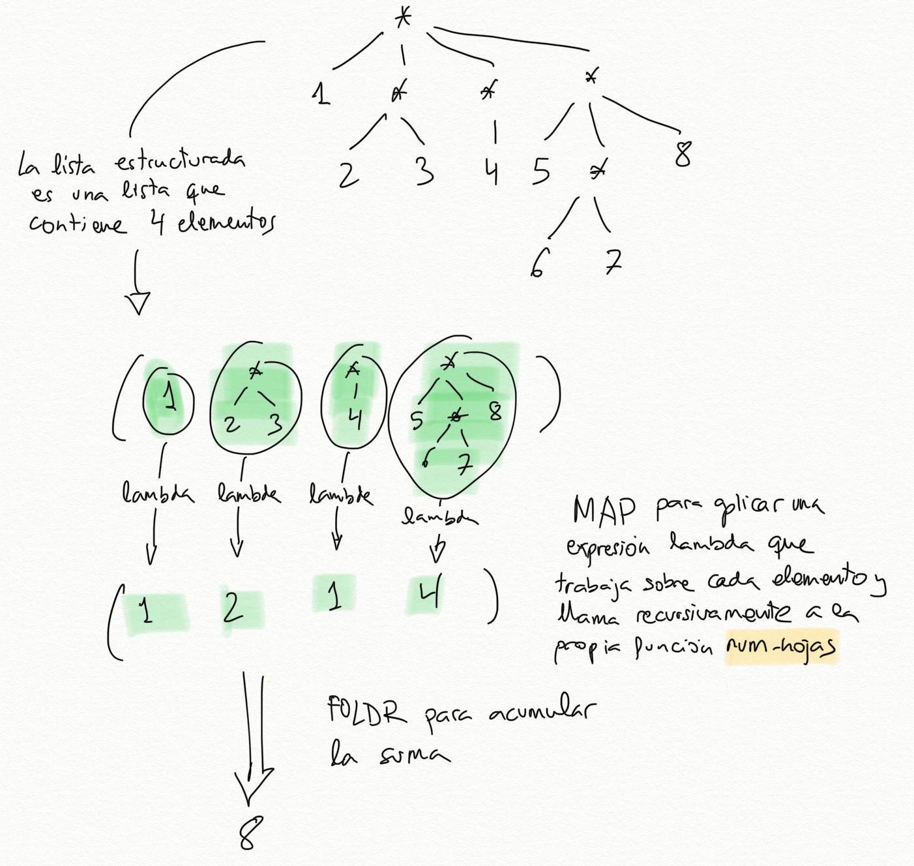

Semana 6
Notas de clase de la semana 6 de LPP.
Tema 4: Estructuras de datos recursivas
- 1 Listas estructuradas
- 1.1. Definición y ejemplos
- 1.2. Funciones recursivas sobre listas estructuradas
- 2 Árboles
- 2.1. Definición de árboles en Scheme
- 2.2. Funciones recursivas sobre árboles
- 3 Árboles binarios
- 3.1. Definición de árboles binarios en Scheme
- 3.2. Funciones recursivas sobre árboles binarios
Listas estructuradas
-
Funciones para trabajar con listas:
(first lista) para obtener el primer elemento de una lista(rest lista) para obtener el resto de la lista(cons dato lista) para construir una nueva lista con el dato
como primer elemento
-
En este apartado vamos a estudiar cómo trabajar con listas que
contienen otras listas. Los elementos de las listas pueden ser
elementos atómicos u otras listas.
-
La función (first lista) puede devolver un elemento u otra lista.
Definición y ejemplos
-
Llamaremos lista estructurada a una lista que contiene otras
sublistas. Lo contrario de lista estructurada es una lista
plana, una lista formada por elementos que no son
listas. Llamaremos hojas a los elementos de una lista que no son
sublistas.
-
A las listas estructuradas cuyas hojas son símbolos se les denomina
en el contexto de la programación funcional expresiones-S
(S-expression).
-
Por ejemplo, la lista estructurada:
(a b (c d e) (f (g h)))
es una lista estructurada con 4 elementos:
- El elemento `'a`, una hoja
- El elemento `'b`, otra hoja
- La lista plana `'(c d e)`
- La lista estructurada `'(f (g h))`
- Una lista formada por parejas la consideraremos una lista plana, ya
que no contiene ninguna sublista. Por ejemplo, la lista
((a . 3) (b . 5) (c . 12))
es una lista plana de tres elementos (hojas) que son parejas.
Función (hoja? dato)
- Un dato es una hoja si no es una lista:
(define (hoja? dato)
(not (list? dato)))
- Por ejemplo, supongamos la siguiente lista:
((1 2) 3 4 (5 6))
Es una lista de 4 elementos, siendo el primero y el último otras
sublistas y el segundo y el tercero hojas. Podemos comprobar si
son o no hojas sus elementos:
(define lista '((1 2) 3 4 (5 6)))
(hoja? (first lista)) ; ⇒ #f
(hoja? (second lista)) ; ⇒ #t
(hoja? (third lista)) ; ⇒ #t
(hoja? (fourth lista)) ; ⇒ #f
- La lista vacía no es una hoja
(hoja? '()) ; ⇒ #f
Función (plana? lista)
- Una lista es plana cuando todos sus elementos son hojas.
(plana? '(a b c d e f)) ; ⇒ #t
(plana? (list (cons 'a 1) "Hola" #f)) ; ⇒ #t
(plana? '(a (b c) d)) ; ⇒ #f
(plana? '(a () b)) ; ⇒ #f
- Una definición recursiva de lista plana:
Una lista es plana si y solo si el primer elemento es una hoja y el
resto es plana.
Una lista vacía es plana.
- Usando esta definición recursiva, podemos implementar en Scheme la
función
(plana? lista) que comprueba si una lista es plana:
(define (plana? lista)
(or (null? lista)
(and (hoja? (first lista))
(plana? (rest lista)))))
¿Cómo sería la definición de plana? utilizando funciones de orden superior?
(define (plana-fos? lista)
(for-all? hoja? lista))
Función (estructurada? lista)
(estructurada? '(1 2 3 4)) ; ⇒ #f
(estructurada? (list (cons 'a 1) (cons 'b 2) (cons 'c 3))) ; ⇒ #f
(estructurada? '(a () b)) ; ⇒ #t
(estructurada? '(a (b c) d)) ; ⇒ #t
- Una lista es estructurada cuando alguno de sus elementos es otra
lista:
(define (estructurada? lista)
(and (not (null? lista))
(or (list? (first lista))
(estructurada? (rest lista)))))
¿Cómo sería la definición de estructurada? utilizando funciones de orden superior?
(define (estructurada-fos? lista)
(exists? list? lista))
- Realmente bastaría con haber hecho una de las dos definiciones y
escribir la otra como la negación de la primera:
(define (estructurada? lista)
(not (plana? lista)))
Ejemplos de listas estructuradas
-
Las listas estructuradas son muy útiles para representar información
jerárquica en donde queremos representar elementos que contienen
otros elementos.
-
Por ejemplo, las expresiones de Scheme son listas estructuradas:
(= 4 (+ 2 2))
(if (= x y) (* x y) (+ (/ x y) 45))
(define (factorial x) (if (= x 0) 1 (* x (factorial (- x 1)))))
- El análisis sintáctico de una oración puede generar una lista
estructurada de símbolos, en donde se agrupan los distintos
elementos de la oración:
((Juan) (compró) (la entrada (de los Miserables)) (el viernes por la tarde))
Pseudo árboles con niveles
-
Las listas estructuradas definen una estructura de niveles, donde la
lista inicial representa el primer nivel, y cada sublista representa
un nivel inferior. Los datos de las listas representan las hojas.
-
Por ejemplo, la representación en forma de niveles de la lista ((a
b c) d e) es la siguiente:

Las hojas d y e están en el nivel 1 y en las posiciones 2 y 3 de
la lista y las hojas a, b y c en el nivel 2 y en la posición 1
de la lista.
Una lista estructurada no es un árbol
Una lista estructurada no es un árbol propiamente dicho, porque
un árbol tiene datos en todos los nodos, mientras que en la lista
estructurada los datos están sólo en las hojas.
-
Las listas estructuradas sirven para agrupar de forma jerárquica
un conjunto de datos en distintos niveles.
-
A pesar de ser distintas de los árboles, ambas son estructuras de
datos jerárquicas (con niveles) que se pueden definir de forma
recursiva y sobre las que se pueden definir algoritmos recursivos.
-
Veremos los árboles en la próxima clase.
Otro ejemplo. ¿Cuál sería la representación en niveles de la
siguiente lista estructurada?:
(map (lambda (x) (+ x 10)) (quote (1 2 3 4)))
Funciones recursivas sobre listas estructuradas
(num-hojas lista): número de hojas de una lista estructurada-
(aplana lista): devuelve una lista plana con todas las hojas de la
lista estructurada
-
Como hemos dicho antes, la cuestión clave en este tipo de listas es
que el first puede ser a su vez otra lista.
Número de hojas
(num-hojas '((1 2) (3 4 (5) 6) (7))) ⇒ 7

- Podemos definir la función obteniendo el primer elemento y el resto
de la lista, y contando recursivamente el número de hojas del primer
elemento y del resto.
- Al ser una lista estructurada, el primer elemento puede ser a su
vez otra lista, por lo que llamamos a la recursión para contar sus
hojas.
- La definición de este caso general usando pseudocódigo es:
Caso general de num-hojas
El número de hojas de una lista estructurada es:
la suma del número de hojas de su primer elemento (que puede ser otra lista) y del
número de hojas del resto.
- La recursión tiene dos llamadas recursivas. Una que recibe el
elemento de la cabeza de la lista y otra que recibe el resto de la
lista.
;Caso general num-hojas
(define (num-hojas lisdat)
; Falta caso base
(+ (num-hojas (first lisdat))
(num-hojas (rest lisdat))))
No hay coste exponencial
- A pesar de haber dos llamadas recursivas, no pasa lo mismo que en
Fibonacci o Pascal.
- No se van a repetir llamadas a la recursión
con los mismos datos.
- La recursión recorre la lista estructurada y su coste será el
número de elementos de la lista.
-
Para considerar el caso base, veamos cómo las llamadas recursivas
reciben cada vez un problema más pequeño.
-
La llamada recursiva sobre el resto de la lista recibe cada vez una
lista con 1 elemento menos. Al final se llamará a la función con una
lista vacía. Ese será un caso base. El número de elementos de una
lista vacía es 0.
-
La llamada recursiva sobre la cabeza de la lista es algo
distinta. Recibe una lista en la que se ha descendido un nivel y
tiene, por tanto, un nivel menos. Al final se llamará a la función
con una hoja (un dato). Ese será el otro caso base y habrá que
devolver 1.
-
Definición completa de la función:
(define (num-hojas lisdat)
(cond
((null? lisdat) 0)
((hoja? lisdat) 1)
(else (+ (num-hojas (first lisdat))
(num-hojas (rest lisdat))))))
Importante
Hay que hacer notar que el parámetro lisdat puede ser tanto una lista
como un dato atómico. En ese caso la función (hoja? lista)
devuelve #t.
En lenguajes de programación fuertemente tipados esto no
sería posible, porque la lista y el dato serían de distinto
tipo. En ese caso el código debería ser un poco más largo y antes
de llamar a la recursión habría que comprobar si el elemento es un
dato o es otra lista. En el caso de Scheme, podemos aprovecharnos
de su característica de ser débilmente tipado y podemos hacer el
código más conciso, llamando siempre a la recursión con el first
de la lista, independientemente de si es un dato u otra lista.
Versión con funciones de orden superior
- Podemos usar también las funciones de orden superior
map y
foldr para obtener una versión más concisa.
- Una lista estructurada tiene como elementos hojas o listas.
- Podemos entonces mapear una expresión lambda con la propia función
que estamos definiendo sobre sus elementos, poniendo como caso
especial el hecho de que la lista sea una hoja.
- El resultado será una lista de números (el número de hojas de cada
componente), que podemos sumar haciendo un
foldr con la
función +:
(define (num-hojas-fos ld)
(if (hoja? ld)
1
(foldr + 0 (map num-hojas-fos ld))))

- Sería equivalente hacer un
apply de la suma para sumar los números
de la lista devuelta por el map:
(define (num-hojas-fos ld)
(if (hoja? ld)
1
(apply + (map num-hojas-fos ld))))
(aplana lista)
- Devuelve una lista plana con todas las hojas de la lista.
(aplana '(1 2 (3 (4 (5))) (((6)))))
; ⇒ (1 2 3 4 5 6)
(define (aplana ld)
(cond
((null? ld) '())
((hoja? ld) (list ld))
(else
(append (aplana (first ld))
(aplana (rest ld))))))
- Solución con funciones de orden superior:
(define (aplana-fos ld)
(if (hoja? ld)
(list ld)
(foldr append '() (map aplana-fos ld))))
(define (aplana-fos ld)
(if (hoja? ld)
(list ld)
(apply append (map aplana-fos ld))))
Otras funciones recursivas
Vamos a diseñar otras funciones recursivas que trabajan con la
estructura jerárquica de las listas estructuradas.
(pertenece-lista? dato lista): busca una hoja en una lista
estructurada(cuadrado-estruct lista): eleva todas las hojas al cuadrado
(suponemos que la lista estructurada contiene números)(map-estruct f lista): similar a map, aplica una función a todas las
hojas de la lista estructurada y devuelve el resultado (otra lista
estructurada)(altura lista): devuelve el número de niveles de una lista
estructurada.(nivel-lista dato lista): devuelve el nivel en el que se encuentra
un dato en una lista
(pertenece-lista? dato lista)
- Comprueba si el dato
dato aparece en la lista estructurada.
(pertenece-lista? 'a '(b c (d (a)))) ⇒ #t
(pertenece-lista? 'a '(b c (d e (f)) g)) ⇒ #f
(define (pertenece-lista? dato ld)
(cond
((null? ld) #f)
((hoja? ld) (equal? dato ld))
(else (or (pertenece-lista? dato (first ld))
(pertenece-lista? dato (rest ld))))))
- Solución con funciones de orden superior:
(define (pertenece-fos? dato ld)
(if (hoja? ld)
(equal? dato ld)
(exists? (lambda (elem)
(pertenece-fos? dato elem)) ld)))
(cuadrado-estruct lista)
- Devuelve una lista estructurada con la misma estructura y sus
números elevados al cuadrado.
(cuadrado-estruct '(2 3 (4 (5)))) ⇒ (4 9 (16 (25))
(define (cuadrado-estruct ld)
(cond ((null? ld) '())
((hoja? ld) (* ld ld ))
(else (cons (cuadrado-estruct (first ld))
(cuadrado-estruct (rest ld))))))
(define (cuadrado-estruct-fos ld)
(if (hoja? ld)
(* ld ld)
(map cuadrado-estruct-fos ld)))
(map-estruct f lista)
- Devuelve una lista estructurada igual que la original con el
resultado de aplicar a cada uno de sus hojas la función
f
(map-estruct (lambda (x) (* x x)) '(2 3 (4 (5))))
; ⇒ (4 9 (16 (25))
(define (map-estruct f ld)
(cond ((null? ld) '())
((hoja? ld) (f ld))
(else (cons (map-estruct f (first ld))
(map-estruct f (rest ld))))))
(define (map-estruct-fos f ld)
(if (hoja? ld)
(f ld)
(map (lambda (elem)
(map-estruct-fos f elem)) ld)))
(altura lista)
- La altura de una lista estructurada viene dada por su número de
niveles
- Una lista plana tiene una altura de 1, la lista
((1 2 3) 4 5)
tiene una altura de 2.
(altura '(1 (2 3) 4)) ⇒ 2
(altura '(((1)) (2 3) 4)) ⇒ 3

Caso general altura
Para calcular la altura de una lista estructurada tenemos que
obtener (de forma recursiva) la altura de su primer elemento, y la
altura del resto de la lista, sumarle 1 a la altura del primer
elemento y devolver el máximo de los dos números.
- La segunda versión, usando las funciones de orden superior
map
para obtener la altura de las sublistas y foldr para quedarse
con el máximo.
(define (altura-fos ld)
(if (hoja? ld)
0
(+ 1 (foldr max 0 (map altura-fos ld)))))
(nivel-hoja dato lista)
- Recorre la lista buscando el dato y devuelve el nivel en que se
encuentra. Si el dato no se encuentra en la lista, se devolverá -1. Si
el dato se encuentra en más de un lugar de la lista se devolverá el
nivel mayor.
(nivel-hoja 'b '(a b (c))) ; ⇒ 1
(nivel-hoja 'b '(a (b) c)) ; ⇒ 2
(nivel-hoja 'b '(a (b) d ((b)))) ; ⇒ 3
(nivel-hoja 'b '(a c d ((e)))) ; ⇒ -1
(define (nivel-hoja dato ld)
(cond
((null? ld) -1)
((hoja? ld) (if (equal? ld dato) 0 -1))
(else (max (suma-1-si-mayor-igual-que-0
(nivel-hoja dato (first ld)))
(nivel-hoja dato (rest ld))))))
- La función auxiliar se define de la siguiente forma:
(define (suma-1-si-mayor-igual-que-0 x)
(if (>= x 0)
(+ x 1)
x))
- Solución con funciones de orden superior:
(define (nivel-hoja-fos dato ld)
(if (hoja? ld)
(if (equal? ld dato) 0 -1)
(suma-1-si-mayor-igual-que-0
(foldr max -1 (map (lambda (elem)
(nivel-hoja-fos dato elem)) ld)))))